Built in modules.
Plug and play.
Delivered to your door.
Powered by the sun.

June Delgado,
Co-Founder of ESMI
Founded in October 2025, ESMI (Eboat System Merchandising Incorporated) was born from a shared friendship, a passion for innovation, and a commitment to transforming the traditional boating industry through clean and sustainable technology.
June Delgado and Herbert Villadelrey, friends for over a decade and former colleagues in Qatar, share a deep appreciation for the sea and its importance to coastal communities.
Herbert, a resident of Nasugbu, Batangas, grew up surrounded by beach resorts, boats, tourism and the fishing industry. June, who also has a home base in Zambales, shares a similar connection to coastal communities blessed with beautiful islands, pristine beaches and abundant marine resources.
Their personal experiences gave them a common understanding of the challenges faced by fishermen, boat operators and tourism entrepreneurs, particularly the rising cost of fuel, frequent engine maintenance, noise pollution and the environmental impact of traditional combustion engines.

Herbert Villadelrey,
Co-Founder of ESMI
During their field surveys across neighbouring island communities, these challenges became even more apparent. They witnessed how fuel expenses significantly affect the daily earnings of fishermen and boat operators, while engine noise and fuel leakages threaten the marine environment.
This inspired them to ask a fundamental question:
What if we could replace the traditional boat engine with a quiet, clean, economical and renewable energy-powered propulsion system?
Driven by this vision, June and Herbert established ESMI to develop an innovative solar-electric boating system designed around the following principles:
Quiet Operation
Zero Direct Fuel Pollution
Renewable Energy
Plug-and-Play Technology
Low Maintenance
Economical Operation
Versatility and Accessibility
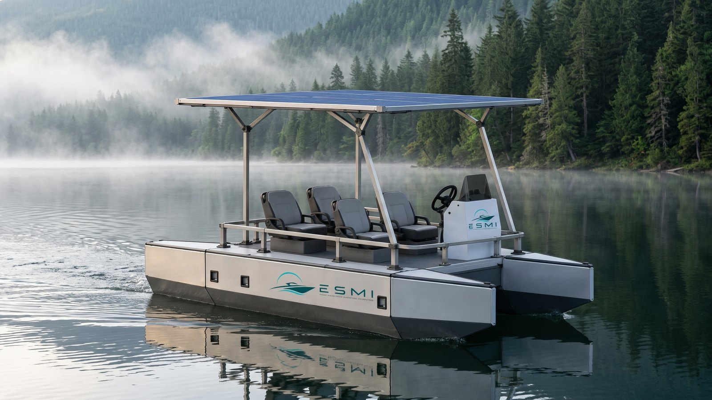
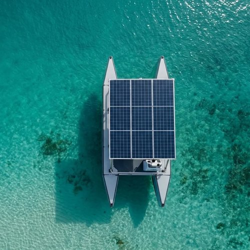
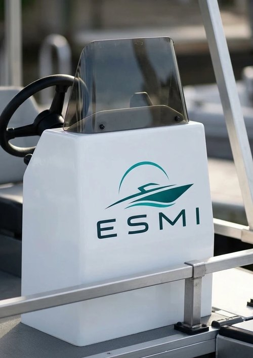
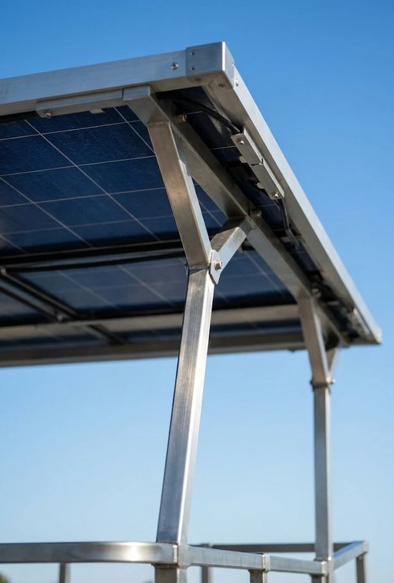
Projects
Projects & target markets: transforming the Philippine boating industry through clean, quiet and renewable energy.
-
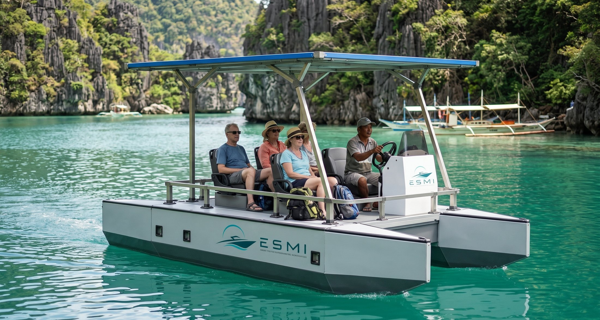
Silent & fuel-free Island-hopping tours - Batangas, Zambales, Siquijor and PalawanFuel is one of the largest daily operating costs for tourism and island-hopping operators. ESMI's solar-electric engine and boats eliminate the need for diesel and petrol during operation, significantly reducing operating expenses while providing guests with a quieter, cleaner and fume-free journey between islands, beaches and lagoons.
-
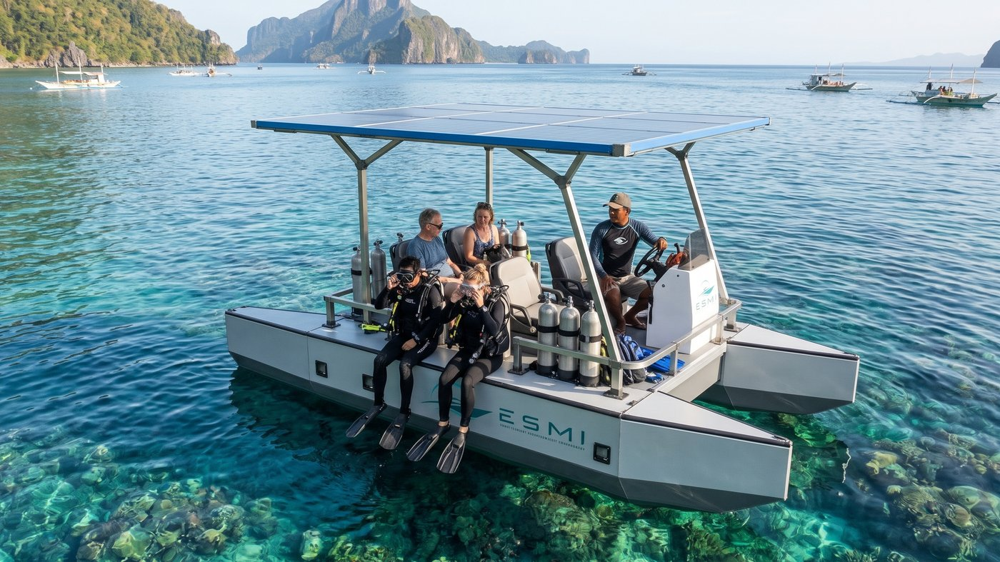
Quiet & reef-friendly Diving and snorkelling - Nasugbu, Anilao, Zambales, Siquijor, Coron and El NidoWith no engine exhaust, minimal noise and reduced vibration, ESMI offers a more peaceful marine experience while helping protect coral reefs, marine biodiversity and the natural attractions that tourism businesses depend on.
-
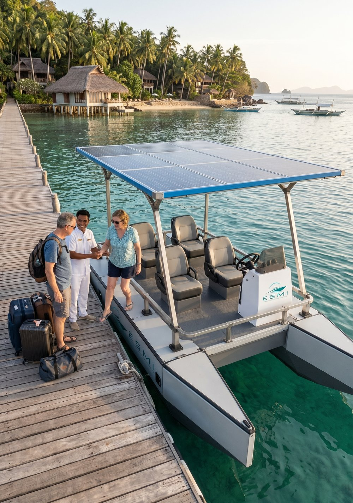
Premium & on-brand Guest shuttles for island resortsA visibly sustainable guest transfer that matches a resort's eco promise. One partner, several boats, with crew training and service included.
-
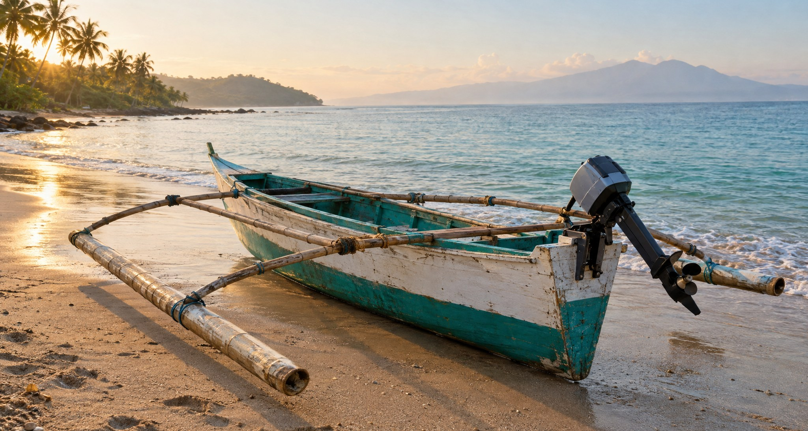
Plug-and-play innovation Traditional boat engine conversionESMI aims to make sustainable boating accessible through modular electric propulsion systems designed to replace traditional diesel and petrol engines, allowing existing boat owners to transition towards cleaner and more economical operations without necessarily replacing their entire boats.
-
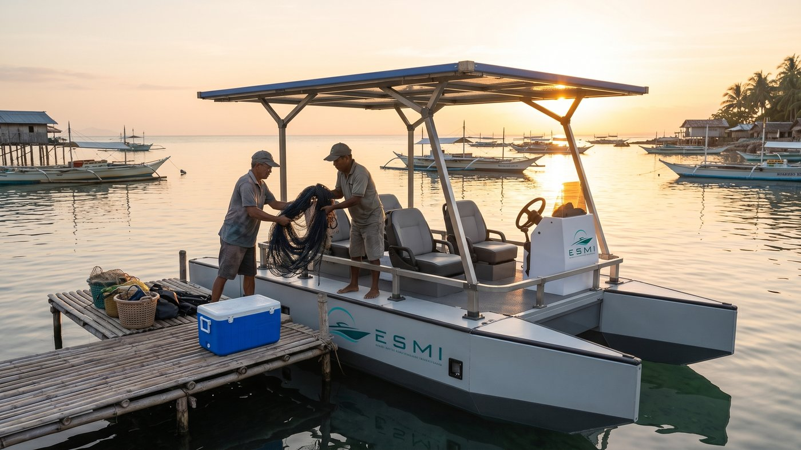
Economical & sustainable Fishing and coastal livelihoodsESMI's renewable energy-powered propulsion systems are designed to help local fishermen reduce daily fuel expenses and engine maintenance costs, improve profitability and protect the marine environment that sustains their livelihoods.
-
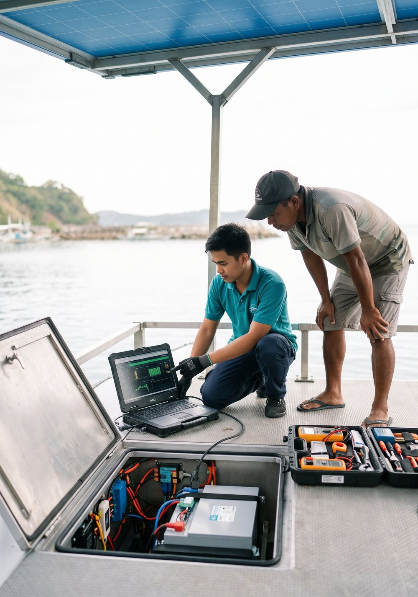
Maintained & supported Service, training and battery careBattery health checks, system updates and a battery replacement program, plus training for operators' own crews on everyday maintenance.
-
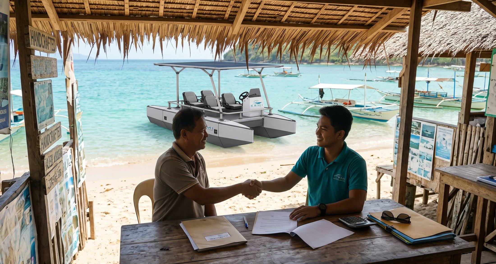
Local & affordable Coastal communities and local fishersLease and rent-to-own options priced against today's fuel spend, so more families can switch to clean, low-cost boats.
-
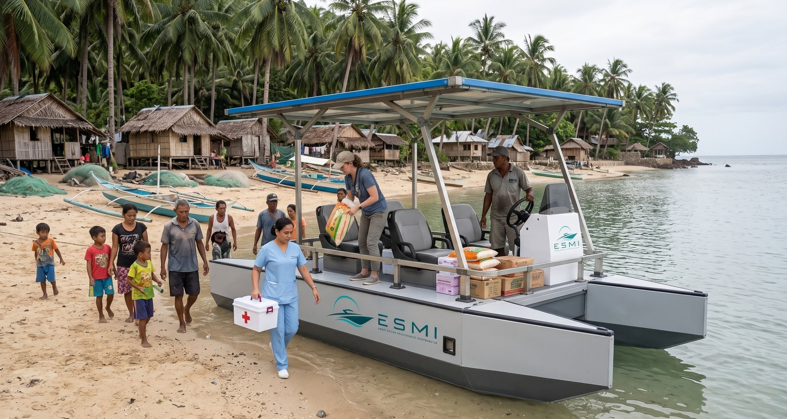
Essential & reliable Medical and goods transport for remote islandsFor local governments and NGOs: a commercially available boat for inter-island medical deliveries, goods transport and disaster response, ready to deploy across many communities, not just one.
Target markets & geographical expansion
ESMI adopts a strategic, phased market expansion approach, beginning with Batangas and Zambales before extending its presence across the Philippine archipelago.
- Phase 1Initial target markets
Batangas: Nasugbu, Anilao, Calatagan, Laiya, Tingloy and surrounding coastal and island communities.
Zambales: Subic, San Antonio, Anawangin, Nagsasa, Capones, Potipot and surrounding islands.
These two provinces will serve as ESMI's primary launch markets, benefiting from the founders' established presence, local knowledge and familiarity with the tourism, boating and fishing industries. - Phase 2Northern & Southern Luzon
Following its initial market development, ESMI will expand further across Luzon, targeting:
Northern Luzon: Pangasinan, La Union, Ilocos Sur, Ilocos Norte and Cagayan.
Southern Luzon and MIMAROPA: Cavite, Quezon, Bicol, Mindoro, Marinduque, Romblon and Palawan, including Coron, El Nido and Puerto Princesa. - Phase 3Visayas
ESMI will further expand into major island and marine tourism destinations across the Visayas, including Boracay, Cebu, Bohol, Siquijor, Negros, Iloilo, Guimaras, Leyte, Samar and other surrounding islands.
- Phase 4Mindanao & nationwide expansion
The next phase will focus on Mindanao, including Siargao, Camiguin, Davao, Samal Island and other coastal destinations, ultimately extending ESMI's reach throughout the Philippine archipelago.
With more than 7,000 islands, the Philippines presents an extraordinary opportunity to transform traditional boating into a cleaner, quieter, more economical and environmentally responsible industry.
ESMI – One Island at a Time, Towards a Sustainable Maritime Future.
Every part
designed for the sea.
Solar, premium
and built your way.
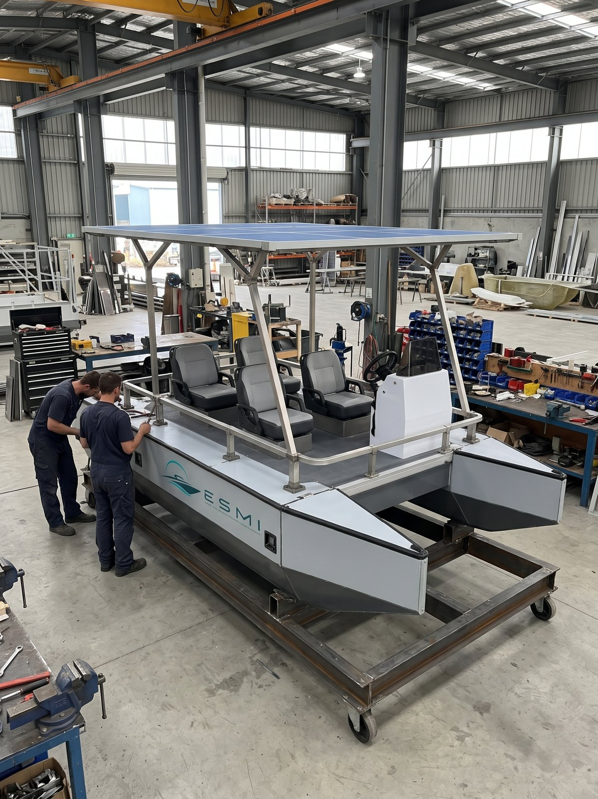
Engineered for the sea
Every ESMI engine and boat is engineered around one idea: use as little energy as possible, and make all of it from the sun. Two slim aluminium hulls slip through the water with less drag than a single wide hull, so the electric drive needs less power to keep the boat moving.
The solar roof is also the canopy: the panels that shade passengers charge the batteries all day long, while the boat is cruising and while it waits at the pier. A battery management system balances every charge and discharge to protect the cells and extend their life.
The electric drive turns stored energy straight into movement, without the heat, noise and losses of a combustion engine. No fuel to burn, no exhaust and no oil in the water: just a quiet, low-vibration ride that is kinder to passengers, reefs and marine life.
Built to come apart. The hulls, deck panels, posts, solar roof, seats and helm console are separate modules joined with bolted connections. The boat can be disassembled to travel in a van or a shipping container, delivered to islands without a boatyard, and assembled on the shore by a small team.
The same design makes storage simple: in typhoon season or the quiet months, the boat can be taken apart and kept indoors, away from storms and salt. A damaged part can be replaced on its own instead of repairing a whole hull.
Marine-grade materials, from aluminium hulls to stainless fittings and sealed electrical compartments, are chosen to resist corrosion in tropical salt water, and every system is laid out for easy inspection and battery servicing by trained local crews.